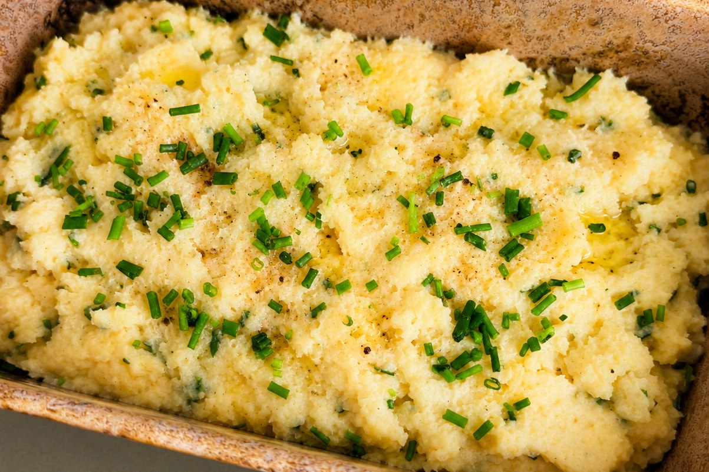

She’s the Goose

Thanksgiving · On the Side
Turnips mashed with cream cheese, butter, chives and a little garlic. Creamy, a little tangy, and easy to make ahead.
Simmer. Put the turnip in a large pot, cover with cold water by an inch, and add 1 tablespoon kosher salt. Bring to a boil, then simmer until completely tender when pierced with a knife, 30–40 minutes for a large rutabaga (20–25 for white turnips).
Dry them out. Drain well. Return the turnip to the empty pot over low heat and stir for 2–3 minutes, until the steam stops and the pieces look dry. Turnips hold a lot of water; this keeps the mash creamy instead of soupy.
Mash. Off the heat, add the butter, cream cheese and garlic powder and mash until smooth with a little texture left. If it’s stiff, loosen it with a spoonful or two of milk.
Season. Stir in the chives, plenty of black pepper and salt to taste.
Serve. Spoon into a warm dish, add a pat of butter to melt over the top, and finish with more chives and pepper.
Turnip or rutabaga. In New England, “turnip” often means the big yellow rutabaga. Either works; rutabaga just takes longer to cook.
Smaller turnip. For about 1½ pounds, use 2 ounces cream cheese, 2 tablespoons butter, ¼ teaspoon garlic powder and 2 tablespoons chives.
Make ahead. Make it up to a day ahead and rewarm over low heat with a splash of milk. Add fresh chives just before serving.
On the same table. It goes alongside the apple cider roasted turkey and its shallot gravy.
Letters from She’s the Goose
A letter and a recipe from me, every Tuesday.
Thank you — look for a note to confirm.